Juan Alberto Gómez
Advogado · Sócio fundador
Especialista em soft landing e empresas estrangeiras. Direito empresarial · Proteção de dados
Ver perfilEscritório jurídico empresarial · Quito · Equador
Assessoramos empresas nacionais e estrangeiras em direito societário, proteção de dados e estabelecimento e operação no Equador, com apoio jurídico, contábil e tecnológico.
Resposta no mesmo dia
Dados atualizados em outubro de 2026
empresas e organizações assessoradas
implementações da LOPDP
designações de DPD vigentes
empresas estrangeiras constituídas
Serviços para empresas
Serviços jurídicos, contábeis e de conformidade para criar, operar e desenvolver sua empresa no Equador.
Nenhum serviço encontrado. Tente outras palavras ou altere o filtro.
Implementação, auditoria jurídica e técnica e acompanhamento contínuo em proteção de dados.
Como podemos ajudar
Definimos escopo, prazos e honorários após entender sua situação.
Estrutura e decisões societárias acompanhadas com visão de negócio.
Como podemos ajudar
Definimos escopo, prazos e honorários após entender sua situação.
Acompanhamento para formalizar sua empresa e iniciar operações no Equador.
Como podemos ajudar
Definimos escopo, prazos e honorários após entender sua situação.
Uma equipe local para apoiar sua instalação e operação no Equador.
Como podemos ajudar
Definimos escopo, prazos e honorários após entender sua situação.
Gestão de relações de trabalho e prevenção de contingências para empregadores.
Como podemos ajudar
Definimos escopo, prazos e honorários após entender sua situação.
Coordenação contábil, tributária e jurídica para o dia a dia da sua empresa.
Como podemos ajudar
Definimos escopo, prazos e honorários após entender sua situação.
Proteção dos ativos intangíveis que distinguem sua empresa.
Como podemos ajudar
Definimos escopo, prazos e honorários após entender sua situação.
Estratégia jurídica para créditos em aberto e conflitos empresariais.
Como podemos ajudar
Definimos escopo, prazos e honorários após entender sua situação.
Documentação e coordenação de trâmites que acompanham as decisões da sua empresa.
Como podemos ajudar
Definimos escopo, prazos e honorários após entender sua situação.
Cobertura
Constituir uma empresa é o início. Coordenamos representação legal, domicílio, contabilidade, contratação e conformidade para acompanhar sua operação no Equador.
Esse acompanhamento é conhecido como soft landing. O escopo é acordado conforme sua estrutura e suas necessidades; os procedimentos bancários e outras autorizações dependem das entidades competentes.
países de origem de nossos clientes
empresas estrangeiras constituídas
Setores Saúde · Educação · Tecnologia · Comércio e varejo · Grupos empresariais · Empresas estrangeiras
Sede em Quito · Equador
Países de origem de nossos clientes
Proteção de dados pessoais
A proteção de dados começa por entender as informações da sua organização e como elas circulam na prática.
Apoio a clínicas, consultórios e organizações que gerenciam informações de pacientes.
Como trabalhamos
Primeiro entendemos a necessidade. Depois definimos o trabalho necessário e como o executaremos.
Conte-nos o contexto da sua empresa para orientarmos o próximo passo.
Acordamos escopo, entregas, prazos e honorários.
Desenvolvemos o serviço e coordenamos as informações necessárias com sua equipe.
Mantemos acompanhamento e suporte quando o serviço exigir.
Equipe
Conheça quem coordena as principais áreas do escritório. A TempoLegal integra assessoria jurídica, contábil e tecnológica. Rolando Valencia, Engenheiro, é Coordenador de Serviços Financeiros. Finanças · Administração.
Advogado · Sócio fundador
Especialista em soft landing e empresas estrangeiras. Direito empresarial · Proteção de dados
Ver perfil
Advogada · Mestre · Advogada sênior
Proteção de dados · Conformidade
Ver perfil
Advogada · Mestre · Advogada sênior
Direito empresarial · Trabalhista
Ver perfil
Engenheiro · Mestre · Coordenador de Serviços Contábeis e Tributários
Contabilidade · Tributos
Ver perfilConheça nossa experiência em diferentes setores.
Ver casos de sucesso →Proteção de dados · Experiência documentada

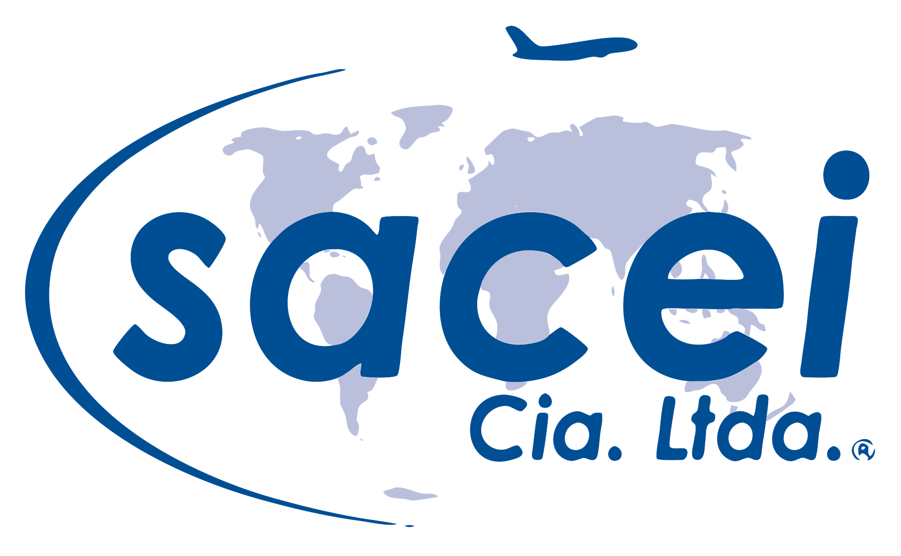

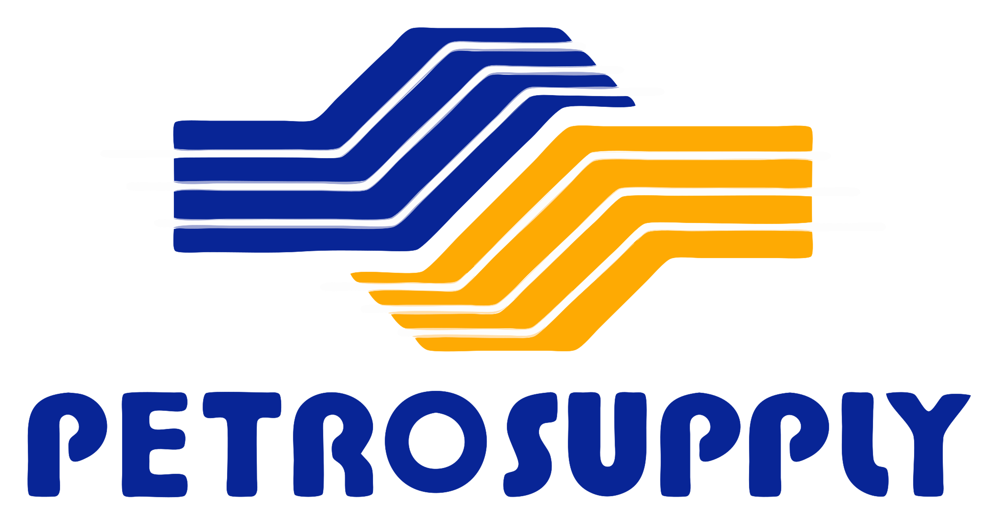


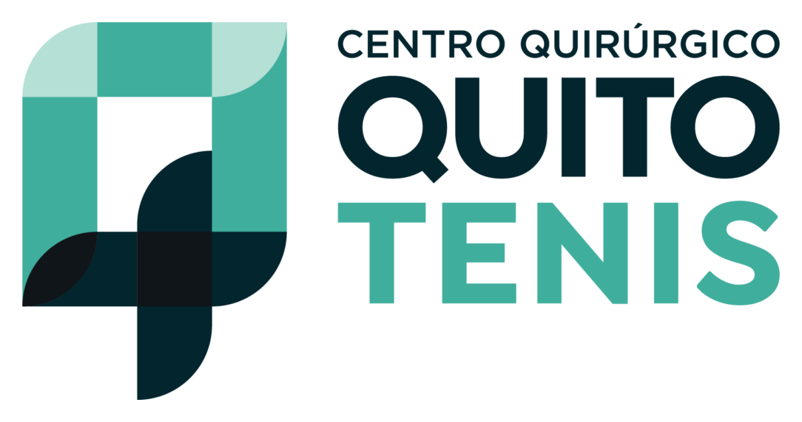
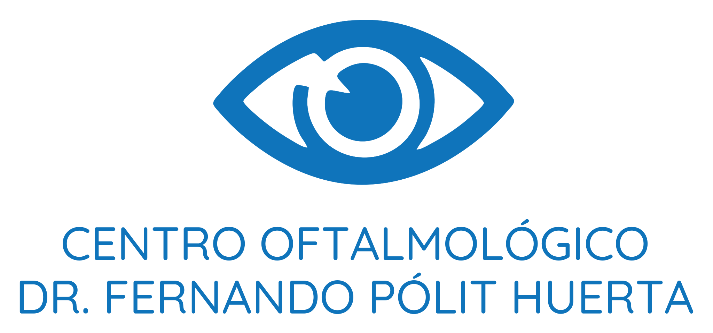


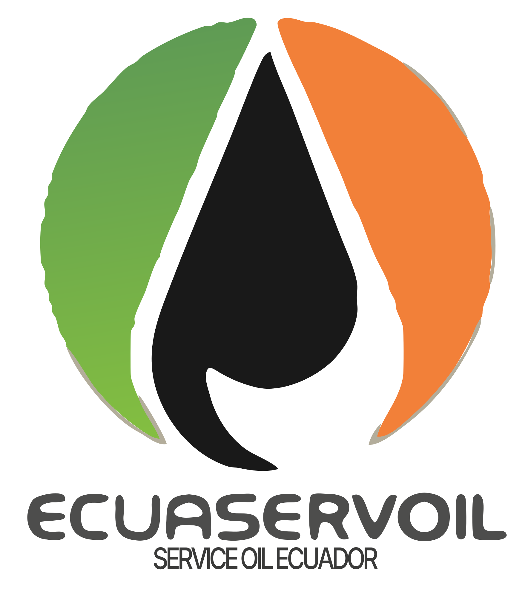

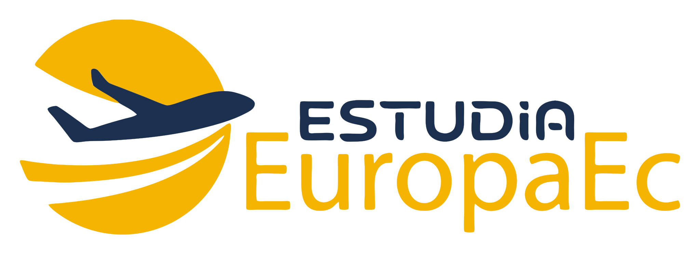
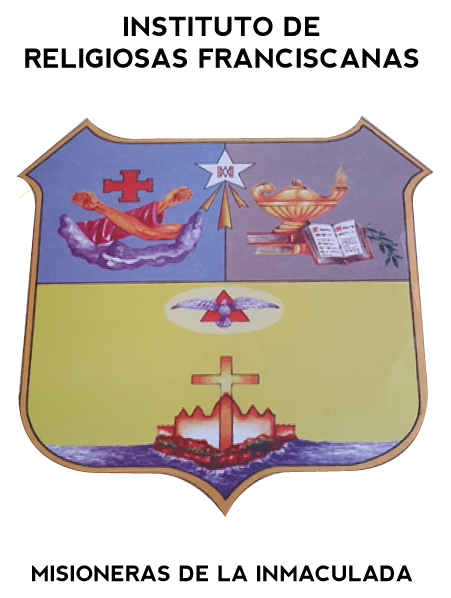


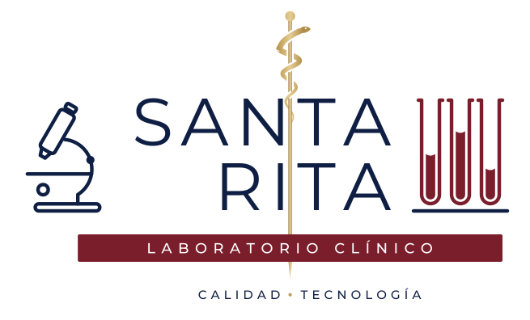


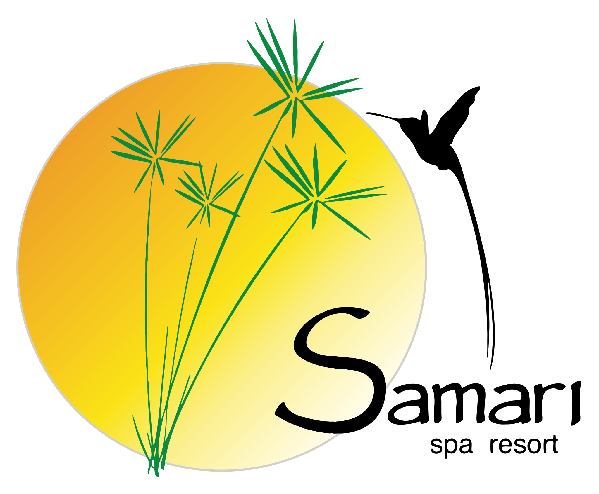


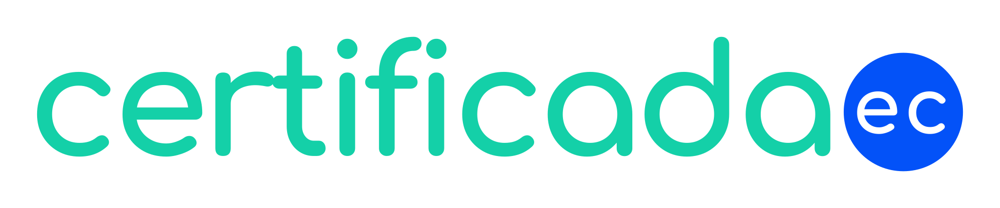


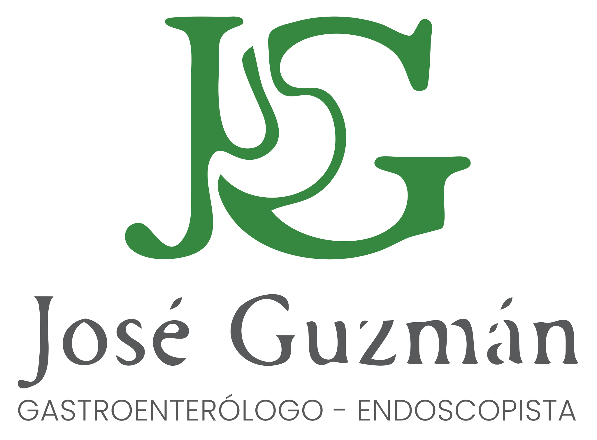

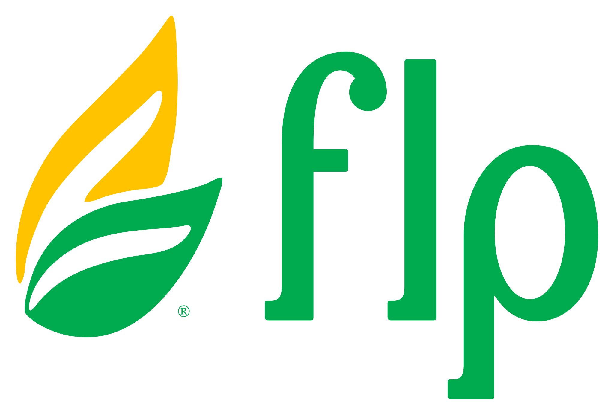


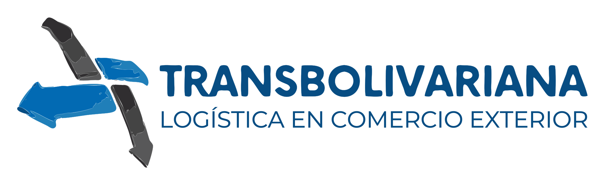

Experiência na prática
Grupos empresariais, operações estrangeiras e instituições de saúde. Cada caso responde ao seu contexto.
Uma instituição que trata dados sensíveis de pacientes precisava implementar e supervisionar seu sistema de conformidade.
Conhecer o casoAssessoria recorrente a um grupo de logística e comércio exterior com várias empresas.
Conhecer o casoUma organização de origem peruana precisava estabelecer suas empresas e coordenar sua operação local.
Conhecer o casoExperiências dos nossos clientes.
Radar jurídico empresarial
Depoimentos
Na GMA temos várias empresas e uma operação logística que não para. Precisamos de uma assessoria jurídica que entenda essa realidade e não se limite à teoria.
A TempoLegal nos acompanha há anos em questões trabalhistas, societárias, contratuais e de proteção de dados pessoais. Conhecem o funcionamento do grupo, por isso, quando surge um problema, podemos ir direto ao que importa.
O que mais valorizo é que nos ajudem a prevenir riscos e nos ofereçam alternativas claras para resolver situações concretas. Para um grupo empresarial como o nosso, contar com advogados que conhecem a operação e estão presentes quando precisamos faz a diferença.
Tradução do depoimento original em espanhol.
En GMA tenemos varias empresas y una operación logística que no se detiene. Necesitamos una asesoría legal que entienda esa realidad y no se quede solo en lo teórico.
TempoLegal nos acompaña desde hace años en asuntos laborales, societarios, contractuales y de protección de datos personales. Conocen cómo funciona el grupo, así que cuando surge un problema podemos ir directamente a lo importante.
Lo que más valoro es que nos ayuden a prevenir riesgos y nos den alternativas claras para resolver situaciones concretas. Para un grupo empresarial como el nuestro, contar con abogados que conocen la operación y están presentes cuando se los necesita marca una diferencia.
Nos negócios há decisões que não podem ser tomadas às cegas. Quando consulto um advogado, preciso que ele me explique bem quais são as opções e os riscos.
Temos trabalhado com Juan Alberto Gómez e a equipe da TempoLegal em contratos e questões societárias. O que aprecio é poder apresentar um problema com confiança e receber uma opinião clara, pensada para o que a empresa realmente precisa.
Essa relação se constrói com o tempo e com o trabalho, não com discursos. Por isso valorizo contar com Juan Alberto e sua equipe quando preciso de apoio jurídico.
Tradução do depoimento original em espanhol.
En los negocios hay decisiones que no se pueden tomar a ciegas. Cuando consulto a un abogado, necesito que me explique bien cuáles son las opciones y los riesgos.
Con Juan Alberto Gómez y el equipo de TempoLegal hemos trabajado en contratos y asuntos societarios. Lo que aprecio es poder plantear un problema con confianza y recibir una opinión clara, pensada para lo que realmente necesita la empresa.
Esa relación se construye con el tiempo y con el trabajo, no con discursos. Por eso valoro contar con Juan Alberto y su equipo cuando necesito respaldo jurídico.
Trabalhar com a Tempo Legal foi uma decisão positiva para minha empresa e minhas necessidades pessoais. Recebi uma assessoria clara e próxima; a equipe entendeu minhas necessidades, explicou os passos do processo e esteve disponível para esclarecer minhas dúvidas. Além do conhecimento jurídico, valorizei especialmente seu compromisso e a atenção personalizada durante todo o processo. Assim pudemos avançar com segurança e nos concentrar em nossas obrigações, sabendo que os aspectos jurídicos estavam em boas mãos. Sem dúvida, recomendaria a Tempo Legal. De fato, trabalho e continuarei trabalhando com eles
Tradução do depoimento original em espanhol.
Trabajar con Tempo Legal fue una decisión positiva para mi empresa y mis necesidades personales. He recibido una asesoría clara y cercana, el equipo entendió mis necesidades, me explicó los pasos del proceso y estuvo disponible para resolver mis inquietudes. Más allá del conocimiento jurídico, valoré especialmente su compromiso y la atención personalizada durante todo el proceso. Así pudimos avanzar con seguridad y enfocarnos en nuestras obligaciones, sabiendo que los aspectos legales estaban en buenas manos. Sin duda, recomendaría a Tempo Legal. De hecho trabajo y seguiré trabajando con ellos
Na FLP há assuntos que exigem uma resposta imediata e outros que precisam de acompanhamento durante meses. Para mim, faz muita diferença contar com uma equipe que já conhece nossas empresas.
A TempoLegal nos apoia em questões trabalhistas, societárias e contratuais e, além disso, cuida da contabilidade da FLP Holding Ecuador. Poder coordenar a parte jurídica e contábil com a mesma equipe facilita muito nosso trabalho.
Não precisamos explicar do zero a história de cada companhia nem procurar a quem recorrer conforme o problema. Sabemos com quem falar e podemos dar continuidade aos assuntos pendentes. No dia a dia de uma empresa, isso vale muito.
Tradução do depoimento original em espanhol.
En FLP hay temas que requieren una respuesta inmediata y otros que necesitan seguimiento durante meses. Para mí hace una gran diferencia contar con un equipo que ya conoce nuestras empresas.
TempoLegal nos apoya en asuntos laborales, societarios y contractuales y, además, lleva la contabilidad de FLP Holding Ecuador. Poder coordinar la parte jurídica y contable con un mismo equipo nos facilita mucho el trabajo.
No tenemos que explicar desde cero la historia de cada compañía ni buscar a quién acudir según el problema. Sabemos con quién hablar y podemos dar continuidad a los asuntos pendientes. Eso, en el día a día de una empresa, vale mucho.
Quando decidimos desenvolver nossas atividades no Equador, precisávamos de muito mais do que constituir uma companhia. Era necessário organizar a estrutura societária, a representação local e as questões contábeis, tributárias e de conformidade.
A TempoLegal nos acompanhou na estruturação de nossas empresas e nessas necessidades, incluindo a proteção de dados pessoais. Para nós, que coordenamos negócios em diferentes países, é uma vantagem ter uma equipe local que conhece nossa operação e à qual podemos recorrer diretamente.
Essa combinação de assessoria jurídica e apoio prático facilitou nosso trabalho no Equador. É o tipo de acompanhamento que recomendaria a outras empresas que desejam se estabelecer e operar no país.
Tradução do depoimento original em espanhol.
Cuando decidimos desarrollar nuestras actividades en Ecuador, necesitábamos mucho más que constituir una compañía. Había que organizar la estructura societaria, la representación local y los temas contables, tributarios y de cumplimiento.
TempoLegal nos ha acompañado en la estructuración de nuestras empresas y en esas necesidades, incluida la protección de datos personales. Para nosotros, que coordinamos negocios en distintos países, es una ventaja tener un equipo local que conoce nuestra operación y al que podemos acudir directamente.
Esa combinación de asesoría jurídica y apoyo práctico nos ha facilitado trabajar en Ecuador. Es el tipo de acompañamiento que recomendaría a otras empresas que quieren establecerse y operar en el país.
Depoimentos de nossos clientes.
Conteúdos para decidir melhor
Publicações sobre direito societário, empresas estrangeiras e proteção de dados.
Dados e trabalho
Uma leitura sobre biometria e gestão de dados de colaboradores.
Ler artigoPerspectivas para sua empresa
Critérios para organizar o controle do grupo, separar atividades e preparar a sucessão.
Ler artigoAspectos societários, contábeis, trabalhistas e de conformidade para planejar a operação.
Ler artigoCritérios de obrigatoriedade e perguntas para analisar a situação da sua organização.
Ler artigoAntes de conversar
A orientação inicial é sem custo. Se o caso exigir análise ou serviço adicional, explicaremos o escopo e apresentaremos uma proposta quando necessário.
Sim. Oferecemos atendimento virtual a empresas nacionais e estrangeiras, além do atendimento presencial em Quito. Revisamos as necessidades e a documentação de cada caso.
Integramos especialidades jurídicas, contábeis e tecnológicas conforme sua operação. O escopo é definido com você antes do início.
Após entender sua situação, definimos um plano com escopo, prazos, honorários e próximos passos.